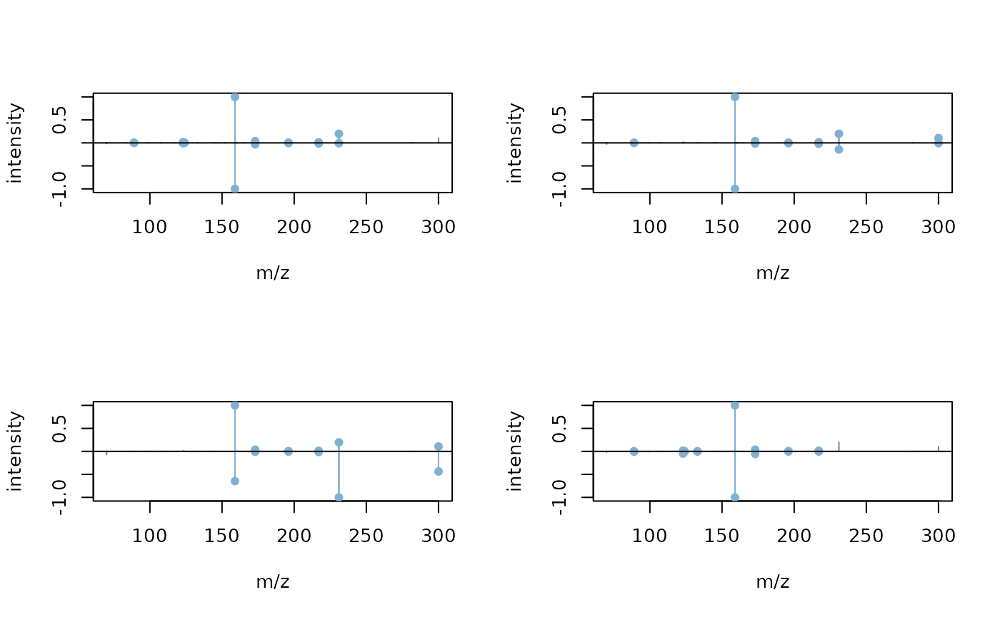

Annotation of MS-based Metabolomics Data
Source:vignettes/MetaboAnnotation.Rmd
MetaboAnnotation.RmdPackage: MetaboAnnotation
Authors: Michael Witting [aut] (https://orcid.org/0000-0002-1462-4426), Johannes Rainer
[aut, cre] (https://orcid.org/0000-0002-6977-7147), Andrea Vicini
[aut] (https://orcid.org/0000-0001-9438-6909), Carolin Huber
[aut] (https://orcid.org/0000-0002-9355-8948), Nir Shachaf
[ctb]
Compiled: Wed Apr 12 11:35:29 2023
Introduction
The MetaboAnnotation package defines high-level user
functionality to support and facilitate annotation of MS-based
metabolomics data (Rainer et al.
2022).
Installation
The package can be installed with the BiocManager
package. To install BiocManager use
install.packages("BiocManager") and, after that,
BiocManager::install("MetaboAnnotation") to install this
package.
General description
MetaboAnnotation provides a set of matching
functions that allow comparison (and matching) between query
and target entities. These entities can be chemical formulas,
numeric values (e.g. m/z or retention times) or fragment spectra. The
available matching functions are:
-
matchFormula: to match chemical formulas. -
matchSpectra: to match fragment spectra. -
matchValues(formerlymatchMz): to match numerical values (m/z, masses, retention times etc).
For each of these matching functions parameter objects are
available that allow different types or matching algorithms. Refer to
the help pages for a detailed listing of these
(e.g. ?matchFormula, ?matchSpectra or
?matchValues). As a result, a Matched (or
MatchedSpectra) object is returned which streamlines and
simplifies handling of the potential one-to-many (or one-to-none)
matching.
Example use cases
The following sections illustrate example use cases of the
functionality provided by the MetaboAnnotation package.
Matching of m/z values
In this section a simple matching of feature m/z values against theoretical m/z values is performed. This is the lowest level of confidence in metabolite annotation. However, it gives ideas about potential metabolites that can be analyzed in further downstream experiments and analyses.
The following example loads the feature table from a lipidomics
experiments and matches the measured m/z values against reference masses
from LipidMaps. Below we use a data.frame as
reference database, but a CompDb
compound database instance would also be supported.
ms1_features <- read.table(system.file("extdata", "MS1_example.txt",
package = "MetaboAnnotation"),
header = TRUE, sep = "\t")
head(ms1_features)## feature_id mz rtime
## 1 Cluster_0001 102.1281 1.560147
## 2 Cluster_0002 102.1279 2.153590
## 3 Cluster_0003 102.1281 2.925570
## 4 Cluster_0004 102.1281 3.419617
## 5 Cluster_0005 102.1270 5.801039
## 6 Cluster_0006 102.1230 8.137535
target_df <- read.table(system.file("extdata", "LipidMaps_CompDB.txt",
package = "MetaboAnnotation"),
header = TRUE, sep = "\t")
head(target_df)## headgroup name exactmass formula chain_type
## 1 NAE NAE 20:4;O 363.2773 C22H37NO3 even
## 2 NAT NAT 20:4;O 427.2392 C22H37NO5S even
## 3 NAE NAE 20:3;O2 381.2879 C22H39NO4 even
## 4 NAE NAE 20:4 347.2824 C22H37NO2 even
## 5 NAE NAE 18:2 323.2824 C20H37NO2 even
## 6 NAE NAE 18:3 321.2668 C20H35NO2 evenFor reference (target) compounds we have only the mass available. We
need to convert this mass to m/z values in order to match the m/z values
from the features (i.e. the query m/z values) against them. For this we
need to define the most likely ions/adducts that would be
generated from the compounds based on the ionization used in the
experiment. We assume the most abundant adducts from the compounds being
"[M+H]+" and "[M+Na]+. We next perform the
matching with the matchValues function providing the query
and target data as well as a parameter object (in our case a
Mass2MzParam) with the settings for the matching. With the
Mass2MzParam, the mass or target compounds get first
converted to m/z values, based on the defined adducts, and these are
then matched against the query m/z values (i.e. the m/z values for the
features). To get a full list of supported adducts the
MetaboCoreUtils::adductNames(polarity = "positive") or
MetaboCoreUtils::adductNames(polarity = "negative") can be
used). Note also, to keep the runtime of this vignette short, we match
only the first 100 features.
parm <- Mass2MzParam(adducts = c("[M+H]+", "[M+Na]+"),
tolerance = 0.005, ppm = 0)
matched_features <- matchValues(ms1_features[1:100, ], target_df, parm)
matched_features## Object of class Matched
## Total number of matches: 55
## Number of query objects: 100 (55 matched)
## Number of target objects: 57599 (1 matched)From the tested 100 features 55 were matched against at least one
target compound (all matches are against a single compound). The result
object (of type Matched) contains the full query data frame
and target data frames as well as the matching information. We can
access the original query data with query and the original
target data with target function:
## feature_id mz rtime
## 1 Cluster_0001 102.1281 1.560147
## 2 Cluster_0002 102.1279 2.153590
## 3 Cluster_0003 102.1281 2.925570
## 4 Cluster_0004 102.1281 3.419617
## 5 Cluster_0005 102.1270 5.801039
## 6 Cluster_0006 102.1230 8.137535## headgroup name exactmass formula chain_type
## 1 NAE NAE 20:4;O 363.2773 C22H37NO3 even
## 2 NAT NAT 20:4;O 427.2392 C22H37NO5S even
## 3 NAE NAE 20:3;O2 381.2879 C22H39NO4 even
## 4 NAE NAE 20:4 347.2824 C22H37NO2 even
## 5 NAE NAE 18:2 323.2824 C20H37NO2 even
## 6 NAE NAE 18:3 321.2668 C20H35NO2 evenFunctions whichQuery and whichTarget can be
used to identify the rows in the query and target data that could be
matched:
whichQuery(matched_features)## [1] 46 47 48 49 50 51 52 53 54 55 56 57 58 59 60 61 62 63 64
## [20] 65 66 67 68 69 70 71 72 73 74 75 76 77 78 79 80 81 82 83
## [39] 84 85 86 87 88 89 90 91 92 93 94 95 96 97 98 99 100
whichTarget(matched_features)## [1] 3149The colnames function can be used to evaluate which
variables/columns are available in the Matched object.
colnames(matched_features)## [1] "feature_id" "mz" "rtime"
## [4] "target_headgroup" "target_name" "target_exactmass"
## [7] "target_formula" "target_chain_type" "adduct"
## [10] "score" "ppm_error"These are all columns from the query, all columns from
the target (the prefix "target_" is added to
the original column names in target) and information on the
matching result (in this case columns "adduct",
"score" and "ppm_error").
We can extract the full matching table with matchedData.
This returns a DataFrame with all rows in query
the corresponding matches in target along with the matching
adduct (column "adduct") and the difference in m/z (column
"score" for absolute differences and
"ppm_error" for the m/z relative differences). Note that if
a row in query matches multiple elements in target,
this row will be duplicated in the DataFrame returned by
data. For rows that can not be matched NA
values are reported.
matchedData(matched_features)## DataFrame with 100 rows and 11 columns
## feature_id mz rtime target_headgroup target_name
## <character> <numeric> <numeric> <character> <character>
## 1 Cluster_00... 102.128 1.56015 NA NA
## 2 Cluster_00... 102.128 2.15359 NA NA
## 3 Cluster_00... 102.128 2.92557 NA NA
## 4 Cluster_00... 102.128 3.41962 NA NA
## 5 Cluster_00... 102.127 5.80104 NA NA
## ... ... ... ... ... ...
## 96 Cluster_00... 201.113 11.2722 FA FA 10:2;O2
## 97 Cluster_00... 201.113 11.4081 FA FA 10:2;O2
## 98 Cluster_00... 201.113 11.4760 FA FA 10:2;O2
## 99 Cluster_00... 201.114 11.5652 FA FA 10:2;O2
## 100 Cluster_01... 201.114 11.7752 FA FA 10:2;O2
## target_exactmass target_formula target_chain_type adduct score
## <numeric> <character> <character> <character> <numeric>
## 1 NA NA NA NA NA
## 2 NA NA NA NA NA
## 3 NA NA NA NA NA
## 4 NA NA NA NA NA
## 5 NA NA NA NA NA
## ... ... ... ... ... ...
## 96 200.105 C10H16O4 even [M+H]+ 0.0007312
## 97 200.105 C10H16O4 even [M+H]+ 0.0005444
## 98 200.105 C10H16O4 even [M+H]+ 0.0005328
## 99 200.105 C10H16O4 even [M+H]+ 0.0014619
## 100 200.105 C10H16O4 even [M+H]+ 0.0020342
## ppm_error
## <numeric>
## 1 NA
## 2 NA
## 3 NA
## 4 NA
## 5 NA
## ... ...
## 96 3.63578
## 97 2.70695
## 98 2.64927
## 99 7.26908
## 100 10.11476Individual columns can be simply extracted with the $
operator:
matched_features$target_name## [1] NA NA NA NA NA
## [6] NA NA NA NA NA
## [11] NA NA NA NA NA
## [16] NA NA NA NA NA
## [21] NA NA NA NA NA
## [26] NA NA NA NA NA
## [31] NA NA NA NA NA
## [36] NA NA NA NA NA
## [41] NA NA NA NA NA
## [46] "FA 10:2;O2" "FA 10:2;O2" "FA 10:2;O2" "FA 10:2;O2" "FA 10:2;O2"
## [51] "FA 10:2;O2" "FA 10:2;O2" "FA 10:2;O2" "FA 10:2;O2" "FA 10:2;O2"
## [56] "FA 10:2;O2" "FA 10:2;O2" "FA 10:2;O2" "FA 10:2;O2" "FA 10:2;O2"
## [61] "FA 10:2;O2" "FA 10:2;O2" "FA 10:2;O2" "FA 10:2;O2" "FA 10:2;O2"
## [66] "FA 10:2;O2" "FA 10:2;O2" "FA 10:2;O2" "FA 10:2;O2" "FA 10:2;O2"
## [71] "FA 10:2;O2" "FA 10:2;O2" "FA 10:2;O2" "FA 10:2;O2" "FA 10:2;O2"
## [76] "FA 10:2;O2" "FA 10:2;O2" "FA 10:2;O2" "FA 10:2;O2" "FA 10:2;O2"
## [81] "FA 10:2;O2" "FA 10:2;O2" "FA 10:2;O2" "FA 10:2;O2" "FA 10:2;O2"
## [86] "FA 10:2;O2" "FA 10:2;O2" "FA 10:2;O2" "FA 10:2;O2" "FA 10:2;O2"
## [91] "FA 10:2;O2" "FA 10:2;O2" "FA 10:2;O2" "FA 10:2;O2" "FA 10:2;O2"
## [96] "FA 10:2;O2" "FA 10:2;O2" "FA 10:2;O2" "FA 10:2;O2" "FA 10:2;O2"NA is reported for query entries for which no match was
found. See also the help page for ?Matched for more details
and information. In addition to the matching of query m/z against target
exact masses as described above it would also be possible to match
directly query m/z against target m/z values by using the
MzParam instead of the Mass2MzParam.
Matching of m/z and retention time values
If expected retention time values were available for the target
compounds, an annotation with higher confidence could be performed with
matchValues and a Mass2MzRtParam parameter
object. To illustrate this we randomly assign retention times from query
features to the target compounds adding also 2 seconds difference. In a
real use case the target data.frame would contain masses
(or m/z values) for standards along with the retention times when ions
of these standards were measured on the same LC-MS setup from which the
query data derives.
Below we subset our data table with the MS1 features to the first 100 rows (to keep the runtime of the vignette short).
ms1_subset <- ms1_features[1:100, ]
head(ms1_subset)## feature_id mz rtime
## 1 Cluster_0001 102.1281 1.560147
## 2 Cluster_0002 102.1279 2.153590
## 3 Cluster_0003 102.1281 2.925570
## 4 Cluster_0004 102.1281 3.419617
## 5 Cluster_0005 102.1270 5.801039
## 6 Cluster_0006 102.1230 8.137535The table contains thus retention times of the features in a column
named "rtime".
Next we randomly assign retention times of the features to compounds in our target data adding a deviation of 2 seconds. As described above, in a real use case retention times are supposed to be determined by measuring the compounds with the same LC-MS setup.
We have now retention times available for both the query and the
target data and can thus perform a matching based on m/z
and retention times. We use the
Mass2MzRtParam which allows us to specify (as for the
Mass2MzParam) the expected adducts, the maximal acceptable
m/z relative and absolute deviation as well as the maximal acceptable
(absolute) difference in retention times. We use the settings from the
previous section and allow a difference of 10 seconds in retention
times. The retention times are provided in columns named
"rtime" which is different from the default
("rt"). We thus specify the name of the column containing
the retention times with parameter rtColname.
parm <- Mass2MzRtParam(adducts = c("[M+H]+", "[M+Na]+"),
tolerance = 0.005, ppm = 0,
toleranceRt = 10)
matched_features <- matchValues(ms1_subset, target_df, param = parm,
rtColname = "rtime")
matched_features## Object of class Matched
## Total number of matches: 31
## Number of query objects: 100 (31 matched)
## Number of target objects: 57599 (1 matched)Less features were matched based on m/z and retention times.
matchedData(matched_features)[whichQuery(matched_features), ]## DataFrame with 31 rows and 13 columns
## feature_id mz rtime target_headgroup target_name
## <character> <numeric> <numeric> <character> <character>
## 1 Cluster_00... 201.113 5.87206 FA FA 10:2;O2
## 2 Cluster_00... 201.113 5.93346 FA FA 10:2;O2
## 3 Cluster_00... 201.113 6.03653 FA FA 10:2;O2
## 4 Cluster_00... 201.114 6.16709 FA FA 10:2;O2
## 5 Cluster_00... 201.113 6.31781 FA FA 10:2;O2
## ... ... ... ... ... ...
## 27 Cluster_00... 201.113 11.2722 FA FA 10:2;O2
## 28 Cluster_00... 201.113 11.4081 FA FA 10:2;O2
## 29 Cluster_00... 201.113 11.4760 FA FA 10:2;O2
## 30 Cluster_00... 201.114 11.5652 FA FA 10:2;O2
## 31 Cluster_01... 201.114 11.7752 FA FA 10:2;O2
## target_exactmass target_formula target_chain_type target_rtime adduct
## <numeric> <character> <character> <numeric> <character>
## 1 200.105 C10H16O4 even 15.8624 [M+H]+
## 2 200.105 C10H16O4 even 15.8624 [M+H]+
## 3 200.105 C10H16O4 even 15.8624 [M+H]+
## 4 200.105 C10H16O4 even 15.8624 [M+H]+
## 5 200.105 C10H16O4 even 15.8624 [M+H]+
## ... ... ... ... ... ...
## 27 200.105 C10H16O4 even 15.8624 [M+H]+
## 28 200.105 C10H16O4 even 15.8624 [M+H]+
## 29 200.105 C10H16O4 even 15.8624 [M+H]+
## 30 200.105 C10H16O4 even 15.8624 [M+H]+
## 31 200.105 C10H16O4 even 15.8624 [M+H]+
## score ppm_error score_rt
## <numeric> <numeric> <numeric>
## 1 0.0004538 2.25645 -9.99030
## 2 0.0004407 2.19131 -9.92890
## 3 0.0005655 2.81186 -9.82583
## 4 0.0015560 7.73698 -9.69527
## 5 0.0006845 3.40357 -9.54455
## ... ... ... ...
## 27 0.0007312 3.63578 -4.59014
## 28 0.0005444 2.70695 -4.45431
## 29 0.0005328 2.64927 -4.38634
## 30 0.0014619 7.26908 -4.29719
## 31 0.0020342 10.11476 -4.08719Matching of SummarizedExperiment or
QFeatures objects
Results from LC-MS preprocessing (e.g. by the xcms
package) or generally metabolomics results might be best represented and
bundled as SummarizedExperiment or QFeatures
objects (from the same-named Bioconductor packages). A
XCMSnExp preprocessing result from xcms can
for example be converted to a SummarizedExperiment using
the quantify method from the xcms package. The
feature definitions (i.e. their m/z and retention time values) will then
be stored in the object’s rowData while the assay (the
numerical matrix) will contain the feature abundances across all
samples. Such SummarizedExperiment objects can be simply
passed as query objects to the matchValues
method. To illustrate this, we create below a simple
SummarizedExperiment using the ms1_features
data frame from the example above as rowData and adding a
matrix with random values as assay.
## Loading required package: MatrixGenerics## Loading required package: matrixStats##
## Attaching package: 'MatrixGenerics'## The following objects are masked from 'package:matrixStats':
##
## colAlls, colAnyNAs, colAnys, colAvgsPerRowSet, colCollapse,
## colCounts, colCummaxs, colCummins, colCumprods, colCumsums,
## colDiffs, colIQRDiffs, colIQRs, colLogSumExps, colMadDiffs,
## colMads, colMaxs, colMeans2, colMedians, colMins, colOrderStats,
## colProds, colQuantiles, colRanges, colRanks, colSdDiffs, colSds,
## colSums2, colTabulates, colVarDiffs, colVars, colWeightedMads,
## colWeightedMeans, colWeightedMedians, colWeightedSds,
## colWeightedVars, rowAlls, rowAnyNAs, rowAnys, rowAvgsPerColSet,
## rowCollapse, rowCounts, rowCummaxs, rowCummins, rowCumprods,
## rowCumsums, rowDiffs, rowIQRDiffs, rowIQRs, rowLogSumExps,
## rowMadDiffs, rowMads, rowMaxs, rowMeans2, rowMedians, rowMins,
## rowOrderStats, rowProds, rowQuantiles, rowRanges, rowRanks,
## rowSdDiffs, rowSds, rowSums2, rowTabulates, rowVarDiffs, rowVars,
## rowWeightedMads, rowWeightedMeans, rowWeightedMedians,
## rowWeightedSds, rowWeightedVars## Loading required package: GenomicRanges## Loading required package: IRanges## Loading required package: GenomeInfoDb## Loading required package: Biobase## Welcome to Bioconductor
##
## Vignettes contain introductory material; view with
## 'browseVignettes()'. To cite Bioconductor, see
## 'citation("Biobase")', and for packages 'citation("pkgname")'.##
## Attaching package: 'Biobase'## The following object is masked from 'package:MatrixGenerics':
##
## rowMedians## The following objects are masked from 'package:matrixStats':
##
## anyMissing, rowMedians## The following object is masked from 'package:AnnotationHub':
##
## cache
se <- SummarizedExperiment(
assays = matrix(nrow = nrow(ms1_features), ncol = 4),
rowData = ms1_features)We can now use the same matchValues call as before to
perform the matching. Matching will be performed on the object’s
rowData, i.e. each row/element of the
SummarizedExperiment will be matched against the target
using e.g. m/z values available in columns of the object’s
rowData:
parm <- Mass2MzParam(adducts = c("[M+H]+", "[M+Na]+"),
tolerance = 0.005, ppm = 0)
matched_features <- matchValues(se, target_df, param = parm)
matched_features## Object of class Matched
## Total number of matches: 9173
## Number of query objects: 2842 (1969 matched)
## Number of target objects: 57599 (3296 matched)As query, the result contains the full
SummarizedExperiment, but colnames and
matchedData will access the respective information from the
rowData of this SummarizedExperiment:
colnames(matched_features)## [1] "feature_id" "mz" "rtime"
## [4] "target_headgroup" "target_name" "target_exactmass"
## [7] "target_formula" "target_chain_type" "target_rtime"
## [10] "adduct" "score" "ppm_error"
matchedData(matched_features)## DataFrame with 10046 rows and 12 columns
## feature_id mz rtime target_headgroup target_name
## <character> <numeric> <numeric> <character> <character>
## 1 Cluster_00... 102.128 1.56015 NA NA
## 2 Cluster_00... 102.128 2.15359 NA NA
## 3 Cluster_00... 102.128 2.92557 NA NA
## 4 Cluster_00... 102.128 3.41962 NA NA
## 5 Cluster_00... 102.127 5.80104 NA NA
## ... ... ... ... ... ...
## 10042 Cluster_28... 957.771 20.2705 TG TG 54:2;O3
## 10043 Cluster_28... 960.791 20.8865 HexCer HexCer 52:...
## 10044 Cluster_28... 961.361 13.0214 NA NA
## 10045 Cluster_28... 970.873 22.0981 ACer ACer 60:1;...
## 10046 Cluster_28... 972.734 15.6914 Hex2Cer Hex2Cer 42...
## target_exactmass target_formula target_chain_type target_rtime
## <numeric> <character> <character> <numeric>
## 1 NA NA NA NA
## 2 NA NA NA NA
## 3 NA NA NA NA
## 4 NA NA NA NA
## 5 NA NA NA NA
## ... ... ... ... ...
## 10042 934.784 C57H106O9 even 15.9950
## 10043 959.779 C58H105NO9 even 10.5076
## 10044 NA NA NA NA
## 10045 947.888 C60H117NO6 even 4.2806
## 10046 971.727 C54H101NO1... even 19.7329
## adduct score ppm_error
## <character> <numeric> <numeric>
## 1 NA NA NA
## 2 NA NA NA
## 3 NA NA NA
## 4 NA NA NA
## 5 NA NA NA
## ... ... ... ...
## 10042 [M+Na]+ -0.0021897 2.286241
## 10043 [M+H]+ 0.0045398 4.725089
## 10044 NA NA NA
## 10045 [M+Na]+ -0.0045054 4.640545
## 10046 [M+H]+ -0.0004240 0.435885Subsetting the result object, to e.g. just matched elements will also
subset the SummarizedExperiment.
matched_sub <- matched_features[whichQuery(matched_features)]
query(matched_sub)## class: SummarizedExperiment
## dim: 1969 4
## metadata(0):
## assays(1): ''
## rownames: NULL
## rowData names(3): feature_id mz rtime
## colnames: NULL
## colData names(0):A QFeatures object is essentially a container for
several SummarizedExperiment objects which rows (features)
are related with each other. Such an object could thus for example
contain the full feature data from an LC-MS experiment as one assay and
a compounded feature data in which data from ions of the same compound
are aggregated as an additional assay. Below we create such an object
using our SummarizedExperiment as an assay of name
"features". For now we don’t add any additional assay to
that QFeatures, thus, the object contains only this single
data set.
## Loading required package: MultiAssayExperiment##
## Attaching package: 'QFeatures'## The following object is masked from 'package:MultiAssayExperiment':
##
## longFormat## The following object is masked from 'package:base':
##
## sweep## An instance of class QFeatures containing 1 assays:
## [1] features: SummarizedExperiment with 2842 rows and 4 columnsmatchValues supports also matching of
QFeatures objects but the user needs to define the assay
which should be used for the matching with the queryAssay
parameter.
matched_qf <- matchValues(qf, target_df, param = parm, queryAssay = "features")
matched_qf## Object of class Matched
## Total number of matches: 9173
## Number of query objects: 2842 (1969 matched)
## Number of target objects: 57599 (3296 matched)colnames and matchedData allow to access
the rowData of the SummarizedExperiment stored
in the QFeatures’ "features" assay:
colnames(matched_qf)## [1] "feature_id" "mz" "rtime"
## [4] "target_headgroup" "target_name" "target_exactmass"
## [7] "target_formula" "target_chain_type" "target_rtime"
## [10] "adduct" "score" "ppm_error"
matchedData(matched_qf)## DataFrame with 10046 rows and 12 columns
## feature_id mz rtime target_headgroup target_name
## <character> <numeric> <numeric> <character> <character>
## 1 Cluster_00... 102.128 1.56015 NA NA
## 2 Cluster_00... 102.128 2.15359 NA NA
## 3 Cluster_00... 102.128 2.92557 NA NA
## 4 Cluster_00... 102.128 3.41962 NA NA
## 5 Cluster_00... 102.127 5.80104 NA NA
## ... ... ... ... ... ...
## 10042 Cluster_28... 957.771 20.2705 TG TG 54:2;O3
## 10043 Cluster_28... 960.791 20.8865 HexCer HexCer 52:...
## 10044 Cluster_28... 961.361 13.0214 NA NA
## 10045 Cluster_28... 970.873 22.0981 ACer ACer 60:1;...
## 10046 Cluster_28... 972.734 15.6914 Hex2Cer Hex2Cer 42...
## target_exactmass target_formula target_chain_type target_rtime
## <numeric> <character> <character> <numeric>
## 1 NA NA NA NA
## 2 NA NA NA NA
## 3 NA NA NA NA
## 4 NA NA NA NA
## 5 NA NA NA NA
## ... ... ... ... ...
## 10042 934.784 C57H106O9 even 15.9950
## 10043 959.779 C58H105NO9 even 10.5076
## 10044 NA NA NA NA
## 10045 947.888 C60H117NO6 even 4.2806
## 10046 971.727 C54H101NO1... even 19.7329
## adduct score ppm_error
## <character> <numeric> <numeric>
## 1 NA NA NA
## 2 NA NA NA
## 3 NA NA NA
## 4 NA NA NA
## 5 NA NA NA
## ... ... ... ...
## 10042 [M+Na]+ -0.0021897 2.286241
## 10043 [M+H]+ 0.0045398 4.725089
## 10044 NA NA NA
## 10045 [M+Na]+ -0.0045054 4.640545
## 10046 [M+H]+ -0.0004240 0.435885Matching of MS/MS spectra
In this section we match experimental MS/MS spectra against reference spectra. This can also be performed with functions from the Spectra package (see SpectraTutorials, but the functions and concepts used here are more suitable to the end user as they simplify the handling of the spectra matching results.
Below we load spectra from a file from a reversed-phase (DDA)
LC-MS/MS run of the Agilent Pesticide mix. With
filterMsLevel we subset the data set to only MS2 spectra.
To reduce processing time of the example we further subset the
Spectra to a small set of selected MS2 spectra. In addition
we assign feature identifiers to each spectrum (again, for this
example these are arbitrary IDs, but in a real data analysis
such identifiers could indicate to which LC-MS feature these spectra
belong).
library(Spectra)
library(msdata)
fl <- system.file("TripleTOF-SWATH", "PestMix1_DDA.mzML", package = "msdata")
pest_ms2 <- filterMsLevel(Spectra(fl), 2L)
## subset to selected spectra.
pest_ms2 <- pest_ms2[c(808, 809, 945:955)]
## assign arbitrary *feature IDs* to each spectrum.
pest_ms2$feature_id <- c("FT001", "FT001", "FT002", "FT003", "FT003", "FT003",
"FT004", "FT004", "FT004", "FT005", "FT005", "FT006",
"FT006")
## assign also *spectra IDs* to each
pest_ms2$spectrum_id <- paste0("sp_", seq_along(pest_ms2))
pest_ms2## MSn data (Spectra) with 13 spectra in a MsBackendMzR backend:
## msLevel rtime scanIndex
## <integer> <numeric> <integer>
## 1 2 361.651 2853
## 2 2 361.741 2854
## 3 2 377.609 3030
## 4 2 377.699 3031
## 5 2 378.120 3033
## ... ... ... ...
## 9 2 378.959 3039
## 10 2 379.379 3041
## 11 2 380.059 3045
## 12 2 380.609 3048
## 13 2 381.029 3050
## ... 35 more variables/columns.
##
## file(s):
## PestMix1_DDA.mzML
## Processing:
## Filter: select MS level(s) 2 [Wed Apr 12 11:35:57 2023]This Spectra should now represent MS2 spectra associated
with LC-MS features from an untargeted LC-MS/MS experiment that we would
like to annotate by matching them against a spectral reference
library.
We thus load below a Spectra object that represents MS2
data from a very small subset of MassBank release
2021.03. This small Spectra object is provided
within this package but it would be possible to use any other
Spectra object with reference fragment spectra instead (see
also the SpectraTutorials
workshop). As an alternative, it would also be possible to use a
CompDb object representing a compound annotation database
(defined in the CompoundDb
package) with parameter target. See the
matchSpectra help page or section Query against
multiple reference databases below for more details and options to
retrieve such annotation resources from Bioconductor’s AnnotationHub.
load(system.file("extdata", "minimb.RData", package = "MetaboAnnotation"))
minimb## MSn data (Spectra) with 100 spectra in a MsBackendDataFrame backend:
## msLevel rtime scanIndex
## <integer> <numeric> <integer>
## 1 2 NA NA
## 2 2 NA NA
## 3 2 NA NA
## 4 2 NA NA
## 5 2 NA NA
## ... ... ... ...
## 96 NA NA NA
## 97 2 NA NA
## 98 2 NA NA
## 99 2 NA NA
## 100 2 NA NA
## ... 42 more variables/columns.
## Processing:
## Filter: select spectra with polarity 1 [Wed Mar 31 10:06:28 2021]
## Switch backend from MsBackendMassbankSql to MsBackendDataFrame [Wed Mar 31 10:07:59 2021]We can now use the matchSpectra function to match each
of our experimental query spectra against the target
(reference) spectra. Settings for this matching can be defined with a
dedicated param object. We use below the
CompareSpectraParam that uses the
compareSpectra function from the Spectra
package to calculate similarities between each query spectrum and all
target spectra. CompareSpectraParam allows to set all
individual settings for the compareSpectra call with
parameters MAPFUN, ppm, tolerance
and FUN (see the help on compareSpectra in the
Spectra
package for more details). In addition, we can pre-filter the
target spectra for each individual query spectrum to speed-up the
calculations. By setting requirePrecursor = TRUE we compare
below each query spectrum only to target spectra with matching precursor
m/z (accepting a deviation defined by parameters ppm and
tolerance). By default, matchSpectra with
CompareSpectraParam considers spectra with a similarity
score higher than 0.7 as matching and these are thus
reported.
csp <- CompareSpectraParam(requirePrecursor = TRUE, ppm = 10)
mtches <- matchSpectra(pest_ms2, minimb, param = csp)
mtches## Object of class MatchedSpectra
## Total number of matches: 16
## Number of query objects: 13 (5 matched)
## Number of target objects: 100 (11 matched)The results are reported as a MatchedSpectra object
which represents the matching results for all query spectra. This type
of object contains all query spectra, all target spectra, the matching
information and the parameter object with the settings of the matching.
The object can be subsetted to e.g. matching results for a specific
query spectrum:
mtches[1]## Object of class MatchedSpectra
## Total number of matches: 0
## Number of query objects: 1 (0 matched)
## Number of target objects: 100 (0 matched)In this case, for the first query spectrum, no match was found among
the target spectra. Below we subset the MatchedSpectra to
results for the second query spectrum:
mtches[2]## Object of class MatchedSpectra
## Total number of matches: 4
## Number of query objects: 1 (1 matched)
## Number of target objects: 100 (4 matched)The second query spectrum could be matched to 4 target spectra. The matching between query and target spectra can be n:m, i.e. each query spectrum can match no or multiple target spectra and each target spectrum can be matched to none, one or multiple query spectra.
Data (spectra variables of either the query and/or the target
spectra) can be extracted from the result object with the
spectraData function or with $ (similar to a
Spectra object). The spectraVariables function
can be used to list all available spectra variables in the result
object:
spectraVariables(mtches)## [1] "msLevel" "rtime"
## [3] "acquisitionNum" "scanIndex"
## [5] "dataStorage" "dataOrigin"
## [7] "centroided" "smoothed"
## [9] "polarity" "precScanNum"
## [11] "precursorMz" "precursorIntensity"
## [13] "precursorCharge" "collisionEnergy"
## [15] "isolationWindowLowerMz" "isolationWindowTargetMz"
## [17] "isolationWindowUpperMz" "peaksCount"
## [19] "totIonCurrent" "basePeakMZ"
## [21] "basePeakIntensity" "ionisationEnergy"
## [23] "lowMZ" "highMZ"
## [25] "mergedScan" "mergedResultScanNum"
## [27] "mergedResultStartScanNum" "mergedResultEndScanNum"
## [29] "injectionTime" "filterString"
## [31] "spectrumId" "ionMobilityDriftTime"
## [33] "scanWindowLowerLimit" "scanWindowUpperLimit"
## [35] "feature_id" "spectrum_id"
## [37] "target_msLevel" "target_rtime"
## [39] "target_acquisitionNum" "target_scanIndex"
## [41] "target_dataStorage" "target_dataOrigin"
## [43] "target_centroided" "target_smoothed"
## [45] "target_polarity" "target_precScanNum"
## [47] "target_precursorMz" "target_precursorIntensity"
## [49] "target_precursorCharge" "target_collisionEnergy"
## [51] "target_isolationWindowLowerMz" "target_isolationWindowTargetMz"
## [53] "target_isolationWindowUpperMz" "target_spectrum_id"
## [55] "target_spectrum_name" "target_date"
## [57] "target_authors" "target_license"
## [59] "target_copyright" "target_publication"
## [61] "target_splash" "target_compound_id"
## [63] "target_adduct" "target_ionization"
## [65] "target_ionization_voltage" "target_fragmentation_mode"
## [67] "target_collision_energy_text" "target_instrument"
## [69] "target_instrument_type" "target_formula"
## [71] "target_exactmass" "target_smiles"
## [73] "target_inchi" "target_inchikey"
## [75] "target_cas" "target_pubchem"
## [77] "target_synonym" "target_precursor_mz_text"
## [79] "target_compound_name" "score"This lists the spectra variables from both the query
and the target spectra, with the prefix
"target_" being used for spectra variable names of the
target spectra. Spectra variable "score" contains the
similarity score.
We could thus use $target_compound_name to extract the
compound name of the matching target spectra for the second query
spectrum:
mtches[2]$target_compound_name## [1] "Azaconazole" "Azaconazole" "Azaconazole" "Azaconazole"The same information can also be extracted on the full
MatchedSpectra. Below we use $spectrum_id to
extract the query spectra identifiers we added above from the full
result object.
mtches$spectrum_id## [1] "sp_1" "sp_2" "sp_2" "sp_2" "sp_2" "sp_3" "sp_4" "sp_4" "sp_5"
## [10] "sp_6" "sp_6" "sp_6" "sp_7" "sp_8" "sp_8" "sp_8" "sp_8" "sp_8"
## [19] "sp_9" "sp_9" "sp_10" "sp_11" "sp_12" "sp_13"Because of the n:m mapping between query and target spectra, the
number of values returned by $ (or
spectraData) can be larger than the total number of query
spectra. Also in the example above, some of the spectra IDs are present
more than once in the result returned by $spectrum_id. The
respective spectra could be matched to more than one target spectrum
(based on our settings) and hence their IDs are reported multiple times.
Both spectraData and $ for
MatchedSpectra use a left join strategy to
report/return values: a value (row) is reported for each query spectrum
(even if it does not match any target spectrum) with
eventually duplicated values (rows) if the query spectrum matches more
than one target spectrum (each value for a query spectrum is repeated as
many times as it matches target spectra). To illustrate this we use
below the spectraData function to extract specific data
from our result object, i.e. the spectrum and feature IDs for the query
spectra we defined above, the MS2 spectra similarity score, and the
target spectra’s ID and compound name.
mtches_df <- spectraData(mtches, columns = c("spectrum_id", "feature_id",
"score", "target_spectrum_id",
"target_compound_name"))
as.data.frame(mtches_df)## spectrum_id feature_id score target_spectrum_id target_compound_name
## 1 sp_1 FT001 NA <NA> <NA>
## 2 sp_2 FT001 0.7869556 LU056604 Azaconazole
## 3 sp_2 FT001 0.8855473 LU056603 Azaconazole
## 4 sp_2 FT001 0.7234894 LU056602 Azaconazole
## 5 sp_2 FT001 0.7219942 LU056605 Azaconazole
## 6 sp_3 FT002 NA <NA> <NA>
## 7 sp_4 FT003 0.7769746 KW108103 triphenylphosphineoxide
## 8 sp_4 FT003 0.7577286 KW108102 triphenylphosphineoxide
## 9 sp_5 FT003 NA <NA> <NA>
## 10 sp_6 FT003 0.7433718 SM839501 Dimethachlor
## 11 sp_6 FT003 0.7019807 EA070705 Dimethachlor
## 12 sp_6 FT003 0.7081274 EA070711 Dimethachlor
## 13 sp_7 FT004 NA <NA> <NA>
## 14 sp_8 FT004 0.7320465 SM839501 Dimethachlor
## 15 sp_8 FT004 0.8106258 EA070705 Dimethachlor
## 16 sp_8 FT004 0.7290458 EA070710 Dimethachlor
## 17 sp_8 FT004 0.8168876 EA070711 Dimethachlor
## 18 sp_8 FT004 0.7247800 EA070704 Dimethachlor
## 19 sp_9 FT004 0.7412586 KW108103 triphenylphosphineoxide
## 20 sp_9 FT004 0.7198787 KW108102 triphenylphosphineoxide
## 21 sp_10 FT005 NA <NA> <NA>
## 22 sp_11 FT005 NA <NA> <NA>
## 23 sp_12 FT006 NA <NA> <NA>
## 24 sp_13 FT006 NA <NA> <NA>Using the plotSpectraMirror function we can visualize
the matching results for one query spectrum. Note also that an
interactive, shiny-based, validation of matching results is
available with the validateMatchedSpectra function. Below
we call this function to show all matches for the second spectrum.
plotSpectraMirror(mtches[2])
Not unexpectedly, the peak intensities of query and target spectra
are on different scales. While this was no problem for the similarity
calculation (the normalized dot-product which is used by default is
independent of the absolute peak values) it is not ideal for
visualization. Thus, we apply below a simple scaling function to both
the query and target spectra and plot the spectra again afterwards (see
the help for addProcessing in the Spectra
package for more details on spectra data manipulations). This function
will replace the absolute spectra intensities with intensities relative
to the maximum intensity of each spectrum.
scale_int <- function(x) {
x[, "intensity"] <- x[, "intensity"] / max(x[, "intensity"], na.rm = TRUE)
x
}
mtches <- addProcessing(mtches, scale_int)
plotSpectraMirror(mtches[2])
The query spectrum seems to nicely match the identified target spectra. Below we extract the compound name of the target spectra for this second query spectrum.
mtches[2]$target_compound_name## [1] "Azaconazole" "Azaconazole" "Azaconazole" "Azaconazole"As alternative to the CompareSpectraParam we could also
use the MatchForwardReverseParam with
matchSpectra. This has the same settings and performs the
same spectra similarity search than CompareSpectraParam,
but reports in addition (similar to MS-DIAL) to the (forward)
similarity score also the reverse spectra similarity score as
well as the presence ratio for matching spectra. While the
default forward score is calculated considering all peaks from
the query and the target spectrum (the peak mapping is performed using
an outer join strategy), the reverse score is
calculated only on peaks that are present in the target spectrum and the
matching peaks from the query spectrum (the peak mapping is performed
using a right join strategy). The presence ratio is
the ratio between the number of mapped peaks between the query and the
target spectrum and the total number of peaks in the target spectrum.
These values are available as spectra variables
"reverse_score" and "presence_ratio" in the
result object). Below we perform the same spectra matching as above, but
using the MatchForwardReverseParam.
mp <- MatchForwardReverseParam(requirePrecursor = TRUE, ppm = 10)
mtches <- matchSpectra(pest_ms2, minimb, param = mp)
mtches## Object of class MatchedSpectra
## Total number of matches: 16
## Number of query objects: 13 (5 matched)
## Number of target objects: 100 (11 matched)Below we extract the query and target spectra IDs, the compound name and all scores.
as.data.frame(
spectraData(mtches, c("spectrum_id", "target_spectrum_id",
"target_compound_name", "score", "reverse_score",
"presence_ratio")))## spectrum_id target_spectrum_id target_compound_name score
## 1 sp_1 <NA> <NA> NA
## 2 sp_2 LU056604 Azaconazole 0.7869556
## 3 sp_2 LU056603 Azaconazole 0.8855473
## 4 sp_2 LU056602 Azaconazole 0.7234894
## 5 sp_2 LU056605 Azaconazole 0.7219942
## 6 sp_3 <NA> <NA> NA
## 7 sp_4 KW108103 triphenylphosphineoxide 0.7769746
## 8 sp_4 KW108102 triphenylphosphineoxide 0.7577286
## 9 sp_5 <NA> <NA> NA
## 10 sp_6 SM839501 Dimethachlor 0.7433718
## 11 sp_6 EA070705 Dimethachlor 0.7019807
## 12 sp_6 EA070711 Dimethachlor 0.7081274
## 13 sp_7 <NA> <NA> NA
## 14 sp_8 SM839501 Dimethachlor 0.7320465
## 15 sp_8 EA070705 Dimethachlor 0.8106258
## 16 sp_8 EA070710 Dimethachlor 0.7290458
## 17 sp_8 EA070711 Dimethachlor 0.8168876
## 18 sp_8 EA070704 Dimethachlor 0.7247800
## 19 sp_9 KW108103 triphenylphosphineoxide 0.7412586
## 20 sp_9 KW108102 triphenylphosphineoxide 0.7198787
## 21 sp_10 <NA> <NA> NA
## 22 sp_11 <NA> <NA> NA
## 23 sp_12 <NA> <NA> NA
## 24 sp_13 <NA> <NA> NA
## reverse_score presence_ratio
## 1 NA NA
## 2 0.8764394 0.5833333
## 3 0.9239592 0.6250000
## 4 0.7573541 0.6250000
## 5 0.9519647 0.4285714
## 6 NA NA
## 7 0.9025051 0.7500000
## 8 0.9164348 0.5000000
## 9 NA NA
## 10 0.8915201 0.5000000
## 11 0.8687003 0.3333333
## 12 0.8687472 0.3703704
## 13 NA NA
## 14 0.8444402 0.5000000
## 15 0.9267965 0.5000000
## 16 0.8765496 0.7500000
## 17 0.9236674 0.4814815
## 18 0.8714208 0.8571429
## 19 0.8743130 0.7500000
## 20 0.8937751 0.5000000
## 21 NA NA
## 22 NA NA
## 23 NA NA
## 24 NA NAIn these examples we matched query spectra only to target spectra if
their precursor m/z is ~ equal and reported only matches with a
similarity higher than 0.7. CompareSpectraParam, through
its parameter THRESHFUN would however also allow other
types of analyses. We could for example also report the best
matching target spectrum for each query spectrum, independently of
whether the similarity score is higher than a certain threshold. Below
we perform such an analysis defining a THRESHFUN that
selects always the best match.
select_top_match <- function(x) {
which.max(x)
}
csp2 <- CompareSpectraParam(ppm = 10, requirePrecursor = FALSE,
THRESHFUN = select_top_match)
mtches <- matchSpectra(pest_ms2, minimb, param = csp2)
res <- spectraData(mtches, columns = c("spectrum_id", "target_spectrum_id",
"target_compound_name", "score"))
as.data.frame(res)## spectrum_id target_spectrum_id target_compound_name
## 1 sp_1 SM839603 Flufenacet
## 2 sp_2 LU056603 Azaconazole
## 3 sp_3 SM839501 Dimethachlor
## 4 sp_4 KW108103 triphenylphosphineoxide
## 5 sp_5 LU100202 2,2'-(Tetradecylimino)diethanol
## 6 sp_6 SM839501 Dimethachlor
## 7 sp_7 RP005503 Glycoursodeoxycholic acid
## 8 sp_8 EA070711 Dimethachlor
## 9 sp_9 KW108103 triphenylphosphineoxide
## 10 sp_10 JP006901 1-PHENYLETHYL ACETATE
## 11 sp_11 EA070711 Dimethachlor
## 12 sp_12 EA070705 Dimethachlor
## 13 sp_13 LU101704 2-Ethylhexyl 4-(dimethylamino)benzoate
## score
## 1 0.000000e+00
## 2 8.855473e-01
## 3 6.313687e-01
## 4 7.769746e-01
## 5 1.772117e-05
## 6 7.433718e-01
## 7 1.906998e-03
## 8 8.168876e-01
## 9 7.412586e-01
## 10 4.085289e-04
## 11 4.323403e-01
## 12 3.469648e-03
## 13 7.612480e-06Note that this whole example would work on any Spectra
object with MS2 spectra. Such objects could also be extracted from an
xcms-based LC-MS/MS data analysis with the
chromPeaksSpectra or featureSpectra functions
from the xcms
package. Also,
Matches can be also further validated using an interactive Shiny app
by calling validateMatchedSpectra on the
MatchedSpectra object. Individual matches can be set to
TRUE or FALSE in this app. By closing the app via the Save & Close
button a filtered MatchedSpectra is returned, containing
only matches manually validated.
Query against multiple reference databases
Getting access to reference spectra can sometimes be a little
cumbersome since it might involve lookup and download of specific
resources or eventual conversion of these into a format suitable for
import. MetaboAnnotation provides compound annotation
sources to simplify this process. These annotation source objects
represent references (links) to annotation resources and can be used in
the matchSpectra call to define the targed/reference
spectra. The annotation source object takes then care, upon request, of
retrieving the annotation data or connecting to the annotation
resources.
Also, compound annotation sources can be combined to allow matching query spectra against multiple reference libraries in a single call.
At present MetaboAnnotation supports the following types
of compound annotation sources (i.e. objects extending
CompAnnotationSource):
Annotation resources that provide their data as a
CompDbdatabase (defined by the CompoundDb) package. These are supported by theCompDbSourceclass.Annotation resources for which a dedicated
MsBackendbackend is available hence supporting to access the data via aSpectraobject. These are supported by theSpectraDbSourceclass.
Various helper functions, specific for the annotation resource, are available to create such annotation source objects:
CompDbSource: creates a compound annotation source object from the providedCompDbSQLite data base file. This function can be used to integrate an existing (locally available)CompDbannotation database into an annotation workflow.MassBankSource: creates a annotation source object for a specific MassBank release. The desired release can be specified with thereleaseparameter (e.g.release = "2021.03"orrelease = "2022.06"). The function will then download the respective annotation database from Bioconductor’s AnnotationHub.
In the example below we create a annotation source for MassBank
release 2022.06. This call will lookup the requested version in
Biocondutor’s (online) AnnotationHub and download the data.
Subsequent requests for the same annotation resource will load the
locally cached version instead. Upcoming MassBank database releases will
be added to AnnotationHub after their official release and
all previous releases will be available as well.
mbank <- MassBankSource("2022.06")
mbank## Object of class CompDbSource
## Metadata information:
## - source: MassBank
## - url: https://massbank.eu/MassBank/
## - source_version: 2022.06
## - source_date: 2022-06-21
## - organism: NA
## - db_creation_date: Tue Aug 30 06:51:39 2022
## - supporting_package: CompoundDb
## - supporting_object: CompDbWe can now use that annotation source object in the
matchSpectra call to compare the experimental spectra from
the previous examples against that release of MassBank.
res <- matchSpectra(
pest_ms2, mbank,
param = CompareSpectraParam(requirePrecursor = TRUE, ppm = 10))## 'MsBackendCompDb' does not support parallel processing. Switching to serial processing.
## 'MsBackendCompDb' does not support parallel processing. Switching to serial processing.
## 'MsBackendCompDb' does not support parallel processing. Switching to serial processing.
## 'MsBackendCompDb' does not support parallel processing. Switching to serial processing.
## 'MsBackendCompDb' does not support parallel processing. Switching to serial processing.
## 'MsBackendCompDb' does not support parallel processing. Switching to serial processing.
## 'MsBackendCompDb' does not support parallel processing. Switching to serial processing.
## 'MsBackendCompDb' does not support parallel processing. Switching to serial processing.
## 'MsBackendCompDb' does not support parallel processing. Switching to serial processing.
## 'MsBackendCompDb' does not support parallel processing. Switching to serial processing.
## 'MsBackendCompDb' does not support parallel processing. Switching to serial processing.
res## Object of class MatchedSpectra
## Total number of matches: 14
## Number of query objects: 13 (6 matched)
## Number of target objects: 10 (10 matched)The result object contains only the matching fragment spectra from the reference database.
target(res)## MSn data (Spectra) with 10 spectra in a MsBackendDataFrame backend:
## msLevel rtime scanIndex
## <integer> <numeric> <integer>
## 1 2 NA NA
## 2 2 NA NA
## 3 2 NA NA
## 4 2 NA NA
## 5 2 NA NA
## 6 2 NA NA
## 7 2 NA NA
## 8 2 NA NA
## 9 2 NA NA
## 10 2 NA NA
## ... 46 more variables/columns.
## Processing:
## Switch backend from MsBackendCompDb to MsBackendDataFrame [Wed Apr 12 11:36:05 2023]And the names of the compounds with matching fragment spectra.
matchedData(res)$target_name## [1] NA "Azaconazole"
## [3] "Azaconazole" "Azaconazole"
## [5] "Azaconazole" NA
## [7] "triphenylphosphineoxide" "triphenylphosphineoxide"
## [9] "Triphenylphosphine oxide" "N,N-Dimethyldodecylamine"
## [11] "Dimethachlor" NA
## [13] "Dimethachlor" "Triphenylphosphine oxide"
## [15] "triphenylphosphineoxide" "triphenylphosphineoxide"
## [17] "Triphenylphosphine oxide" NA
## [19] NA NA
## [21] NAPerformance and parallel processing
Pre-filtering the target spectra based on similar precursor m/z
(using requirePrecursor = TRUE generally speeds up the call
because a spectra comparison needs only to be performed on subsets of
target spectra. Performance of the matchSpectra function
depends however also on the backend used for the query and target
Spectra. For some backends the peaks data (i.e. m/z and
intensity values) might not be already loaded into memory and hence
spectra comparisons might be slower because that data needs to be first
loaded. As an example, for Spectra objects, such as our
pest_ms2 variable, that use the
MsBackendMzRbackend, the peaks data needs to be loaded from
the raw data files before the spectra similarity scores can be
calculated. Changing the backend to an in-memory data representation
before matchSpectra can thus improve the performance (at
the cost of a higher memory demand).
Below we change the backends of the pest_ms2 and
minimb objects to MsBackendMemory which keeps
all data (spectra and peaks data) in memory and we compare the
performance against the originally used MsBackendMzR (for
pest_ms2) and MsBackendDataFrame (for
minimb).
pest_ms2_mem <- setBackend(pest_ms2, MsBackendMemory())
minimb_mem <- setBackend(minimb, MsBackendMemory())
library(microbenchmark)
microbenchmark(compareSpectra(pest_ms2, minimb, param = csp),
compareSpectra(pest_ms2_mem, minimb_mem, param = csp),
times = 5)## Unit: milliseconds
## expr min lq mean
## compareSpectra(pest_ms2, minimb, param = csp) 62.1399 62.3952 62.95416
## compareSpectra(pest_ms2_mem, minimb_mem, param = csp) 35.3846 35.6297 44.93432
## median uq max neval
## 62.8599 63.1160 64.2598 5
## 35.7606 50.8832 67.0135 5There is a considerable performance gain by using the
MsBackendMemory over the two other backends, that comes
however at the cost of a higher memory demand. Thus, for large data sets
(or reference libraries) this might not be an option. See also issue
#93 in the MetaboAnnotation github repository for more
benchmarks and information on performance of
matchSpectra.
If for target a Spectra using a SQL
database-based backend is used (such as a
MsBackendMassbankSql, MsBackendCompDb or
MsBackendSql) and spectra matching is performed with
requirePrecursorMz = TRUE, simply caching the
precursor m/z values of all target spectra in memory improves the
performance of matchSpectra considerably. This can be
easily done with e.g.
target_sps$precursorMz <- precursorMz(target_sps) where
target_sps is the Spectra object that uses one
of the above mentioned backends. With this call all precursor m/z values
will be cached within target_sps and any
precursorMz(target_sps) call (which is used by
matchSpectra to select the candidate spectra against which
to compare a query spectrum) will not require a separate SQL call.
Parallel processing can also improve performance, but might not be possible for all backends. In particular, backends based on SQL databases don’t allow parallel processing because the database connection can not be shared across different processes.
Session information
## R version 4.3.0 beta (2023-04-06 r84184)
## Platform: x86_64-pc-linux-gnu (64-bit)
## Running under: Ubuntu 22.04.2 LTS
##
## Matrix products: default
## BLAS: /usr/lib/x86_64-linux-gnu/openblas-pthread/libblas.so.3
## LAPACK: /usr/lib/x86_64-linux-gnu/openblas-pthread/libopenblasp-r0.3.20.so; LAPACK version 3.10.0
##
## locale:
## [1] LC_CTYPE=en_US.UTF-8 LC_NUMERIC=C
## [3] LC_TIME=en_US.UTF-8 LC_COLLATE=en_US.UTF-8
## [5] LC_MONETARY=en_US.UTF-8 LC_MESSAGES=en_US.UTF-8
## [7] LC_PAPER=en_US.UTF-8 LC_NAME=C
## [9] LC_ADDRESS=C LC_TELEPHONE=C
## [11] LC_MEASUREMENT=en_US.UTF-8 LC_IDENTIFICATION=C
##
## time zone: UTC
## tzcode source: system (glibc)
##
## attached base packages:
## [1] stats4 stats graphics grDevices utils datasets methods
## [8] base
##
## other attached packages:
## [1] microbenchmark_1.4.9 msdata_0.39.0
## [3] QFeatures_1.9.3 MultiAssayExperiment_1.25.9
## [5] SummarizedExperiment_1.29.1 Biobase_2.59.0
## [7] GenomicRanges_1.51.4 GenomeInfoDb_1.35.16
## [9] IRanges_2.33.1 MatrixGenerics_1.11.1
## [11] matrixStats_0.63.0-9003 Spectra_1.9.15
## [13] ProtGenerics_1.31.0 BiocParallel_1.33.12
## [15] S4Vectors_0.37.5 MetaboAnnotation_1.3.2
## [17] AnnotationHub_3.7.4 BiocFileCache_2.7.2
## [19] dbplyr_2.3.2 BiocGenerics_0.45.3
## [21] BiocStyle_2.27.1
##
## loaded via a namespace (and not attached):
## [1] DBI_1.1.3 bitops_1.0-7
## [3] gridExtra_2.3 rlang_1.1.0
## [5] magrittr_2.0.3 clue_0.3-64
## [7] compiler_4.3.0 RSQLite_2.3.1
## [9] png_0.1-8 systemfonts_1.0.4
## [11] vctrs_0.6.1 stringr_1.5.0
## [13] pkgconfig_2.0.3 MetaboCoreUtils_1.7.0
## [15] crayon_1.5.2 fastmap_1.1.1
## [17] XVector_0.39.0 ellipsis_0.3.2
## [19] utf8_1.2.3 promises_1.2.0.1
## [21] rmarkdown_2.21 ragg_1.2.5
## [23] purrr_1.0.1 bit_4.0.5
## [25] xfun_0.38 zlibbioc_1.45.0
## [27] cachem_1.0.7 ChemmineR_3.51.1
## [29] jsonlite_1.8.4 blob_1.2.4
## [31] highr_0.10 later_1.3.0
## [33] DelayedArray_0.25.0 interactiveDisplayBase_1.37.0
## [35] cluster_2.1.4 parallel_4.3.0
## [37] R6_2.5.1 bslib_0.4.2
## [39] stringi_1.7.12 jquerylib_0.1.4
## [41] Rcpp_1.0.10 bookdown_0.33
## [43] knitr_1.42 base64enc_0.1-3
## [45] igraph_1.4.2 Matrix_1.5-4
## [47] httpuv_1.6.9 tidyselect_1.2.0
## [49] yaml_2.3.7 codetools_0.2-19
## [51] curl_5.0.0 lattice_0.21-8
## [53] tibble_3.2.1 withr_2.5.0
## [55] shiny_1.7.4 KEGGREST_1.39.0
## [57] evaluate_0.20 desc_1.4.2
## [59] xml2_1.3.3 Biostrings_2.67.2
## [61] pillar_1.9.0 BiocManager_1.30.20
## [63] filelock_1.0.2 DT_0.27
## [65] ncdf4_1.21 generics_0.1.3
## [67] rprojroot_2.0.3 RCurl_1.98-1.12
## [69] BiocVersion_3.17.1 ggplot2_3.4.2
## [71] munsell_0.5.0 scales_1.2.1
## [73] xtable_1.8-4 glue_1.6.2
## [75] lazyeval_0.2.2 tools_4.3.0
## [77] mzR_2.33.1 fs_1.6.1
## [79] grid_4.3.0 MsCoreUtils_1.11.5
## [81] AnnotationDbi_1.61.2 colorspace_2.1-0
## [83] GenomeInfoDbData_1.2.10 cli_3.6.1
## [85] rappdirs_0.3.3 textshaping_0.3.6
## [87] rsvg_2.4.0 fansi_1.0.4
## [89] dplyr_1.1.1 AnnotationFilter_1.23.0
## [91] gtable_0.3.3 sass_0.4.5
## [93] digest_0.6.31 rjson_0.2.21
## [95] htmlwidgets_1.6.2 memoise_2.0.1
## [97] htmltools_0.5.5 pkgdown_2.0.7.9000
## [99] lifecycle_1.0.3 httr_1.4.5
## [101] CompoundDb_1.3.3 mime_0.12
## [103] bit64_4.0.5 MASS_7.3-58.4